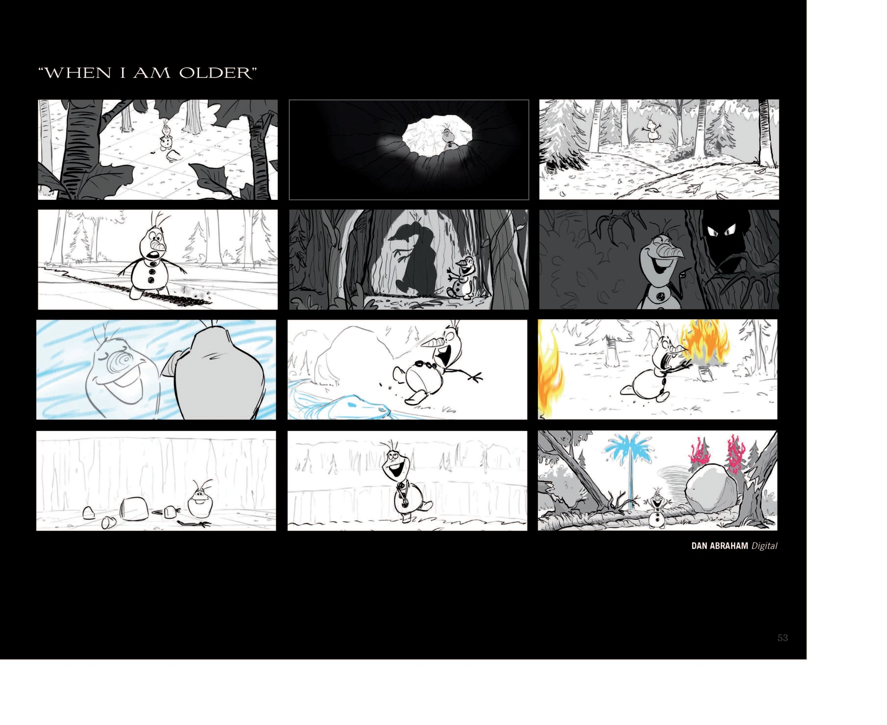

依 web.md 衍生清单与各小说 dossier 自身时间点，整理如下（区别于正传主时间线）：
| 作品 | 类型 / 年份 | 时间线定位 | 出处 |
|---|---|---|---|
| 《Frozen Junior Novel》 | 青少小说 / 2013 | = 电影1 正传散文化 | 《Frozen Junior Novel》· 第4节 |
| 《Conceal Don't Feel》 | 双视角心理小说 | = 电影1 心理向补充（新增"巨魔诅咒分离"等设定） | 《Conceal Don't Feel》· 第4节 |
| 《Frozen Fever》 | 短片 / 2015-03-13 | 电影1后数月，安娜加冕后首个生日 | web.md · 第2节 |
| 《Olaf's Frozen Adventure》 | 节日特辑 / 2017 | 电影1后、电影2前；"归属与家"主题 | web.md · 第2节 |
| 《Once Upon a Snowman》 | 短片 / 2020 | 补全 Olaf 被艾莎创造、遇安娜一行前的经历 | web.md · 第2节 |
| 《Myth: A Frozen Tale》 | VR短片 / 2019 | 四大元素之灵起源神话 | web.md · 第2节 |
| 《Frozen 2: Forest of Shadows》 | 前传小说 / 2019 | 电影2之前（加冕3年后 / 父母遇难7年后） | 《森林阴影》· 第4节 |
| 《Dangerous Secrets》 | 父母前传 / 2020 | 全部在电影1之前（父母一生） | 《危险秘密》· 第4节 |
| 《All Is Found》 | 10周年短篇集 / 2023 | 分散：电影1前童年 → 电影1后 → 电影2后（故事10 时间错位） | 《All Is Found》· 第4节 |
| 《Polar Nights》 | 衍生小说 / 2022 | 电影2之后约 2 个月（极夜节、draugr 事件） | 《Polar Nights》· 第4节 |
| 《At Home with Olaf》/《Olaf Presents》 | 短剧 / 2020–2021 | 衍生喜剧，独立于主时间线 | web.md · 第2节 |
📌 《All Is Found》十周年官方短篇集，10 篇对应电影上映后十年各阶段。（来源：《All Is Found》· images/cover.jpg）